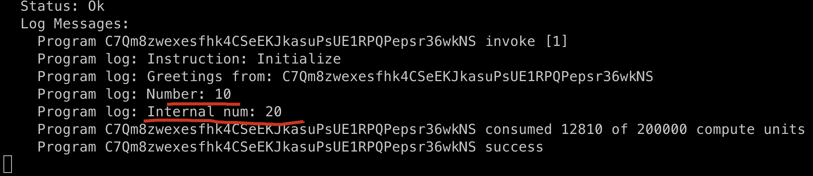
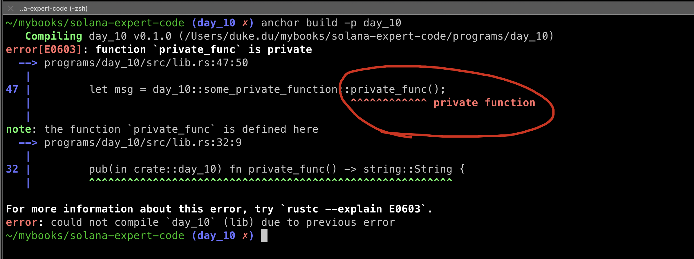
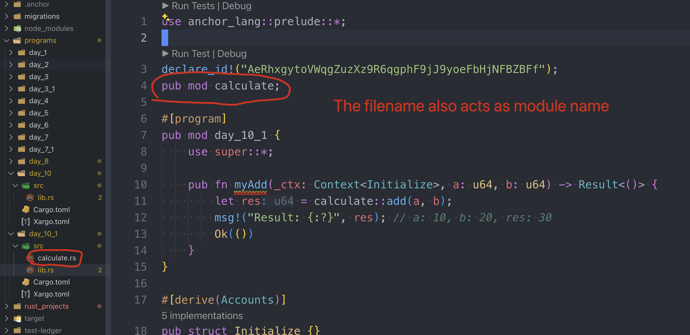

VISIBILITY AND INHERIENCE
There are four types of function visibility in solidity, they are:
- public: accessible from within the contract and externally.
- external: accessible from outside the contract only.
- internal: accessible within the contract and inheriting contracts.
- private: accessible within the contract only.
That's see how we can acchieve this in Solana.
Public functions
We can define a function with the pub prefix to indicate that it is public.
All the functions we have defined since day_1 till date arel all public functions:
pub fn public_function(ctx: Contex) -> Result<()> {
//...
Ok(())
}
You cannot remove the pubkeyword for functions inside of the module(mod) labeled #[program], it willnot compile.
Solana don't have external functions.
Internal functions
Rust, and hence Solana, does not have "class" the way solidity does, as Rust is not object-oriented, and Rust uses modules to organize code.
- define a mode
pub mod internal_funcinsidepub mod day_10 - call
internal_func1withininitializevia mod_name::function_name
#[program]
pub mod day_10 {
use super::*;
pub fn initialize(ctx: Context) -> Result<()> {
msg!("Greetings from: {:?}", ctx.program_id);
let number = get_number();
msg!("Number: {:?}", number);
let num = internal_func::internal_func1();
msg!("Internal num: {:?}", num);
Ok(())
}
pub mod internal_func {
pub fn internal_func1() -> u64 {
return 20;
}
}
}
define another mod within this file lib.rs but outside of pub mod day_10,
import and call function of mod internal_func
mod call {
use crate::day_10;
pub fn call_internal_func() {
let num = day_10::internal_func::internal_func1();
println!("Internal num: {:?}", num);
}
}
the full code:
use anchor_lang::prelude::*;
declare_id!("C7Qm8zwexesfhk4CSeEKJkasuPsUE1RPQPepsr36wkNS");
#[program]
pub mod day_10 {
use super::*;
pub fn initialize(ctx: Context) -> Result<()> {
msg!("Greetings from: {:?}", ctx.program_id);
let number = get_number(); // <--call a single function outside any mod msg!("number: {:?}", number); let num="internal_func::internal_func1();" msg!("internal num: num); ok(()) } pub internal_func { fn internal_func1() -> u64 {
return 20;
}
}
}
// This is a outer module
mod call {
use crate::day_10;
pub fn call_internal_func() {
let num = day_10::internal_func::internal_func1();
println!("Internal num: {:?}", num);
}
}
pub fn get_number() -> u64 {
10
}
#[derive(Accounts)]
pub struct Initialize {}
add test cases and run: (can get the source code down below).

this is how we acchieve internal functions, it can be accessed by parent mod (day_10), and outside mod call as well.
Private functions
Definiing a function within a specific module and ensuring they are not exposed outside that scope is a way to achieve private visibility:
use anchor_lang::prelude::*;
declare_id!("C7Qm8zwexesfhk4CSeEKJkasuPsUE1RPQPepsr36wkNS");
#[program]
pub mod day_10 {
use super::*;
pub fn initialize(ctx: Context) -> Result<()> {
// the reset code
let msg = some_private_function::private_func();
msg!("Private function: {:?}", msg);
Ok(())
}
pub mod some_private_function {
use std::string;
pub(in crate::day_10) fn private_func() -> string::String {
return "Hello private function!".to_string();
}
}
}
// This is a outer module
mod call {
use crate::day_10;
// the reset code
pub fn call_private_func() {
let msg = day_10::some_private_function::private_func();
println!("Private function: {:?}", msg);
}
}
pub fn get_number() -> u64 {
10
}
#[derive(Accounts)]
pub struct Initialize {}
The pub(in crate::day_10) keyword indicates that private_func function is only visible within day_10 module, let's build again!
anchor build -p day_10
result:

This shows that private_func is not publicly accessible and cannot be invoked from outside the module where it is visible. Check out visibility and privacy in Rust docs for more.
Rust Module
Let's split our code into separate files to better manage our codebase. We can use the mod keyword to achieve this.
anchor new day_10_1
create a file calculate.rswith the following code:
pub fn add(a: u64, b: u64) -> u64 {
a + b
}
pub fn sub(a: u64, b: u64) -> u64 {
a - b
}
import calculate within lib.rs
use anchor_lang::prelude::*;
declare_id!("AeRhxgytoVWqgZuzXz9R6qgphF9jJ9yoeFbHjNFBZBFf");
pub mod calculate;
#[program]
pub mod day_10_1 {
use super::*;
pub fn myAdd(_ctx: Context, a: u64, b: u64) -> Result<()> {
let res = calculate::add(a, b);
msg!("Result: {:?}", res); // a: 10, b: 20, res: 30
Ok(())
}
}
#[derive(Accounts)]
pub struct Initialize {}
Be careful with the way that we import mod calculate, should be the same.

Build successfully.
anchor build -p day_10_1
Key takeaways
- functions under
#[program]mod must be public: Addingpubkeyword prior to function names - it's allowed to declare functions without pub inside the files out of a mod
- A file's name is also it's module name
Links
- day_10 original article:
- source code: